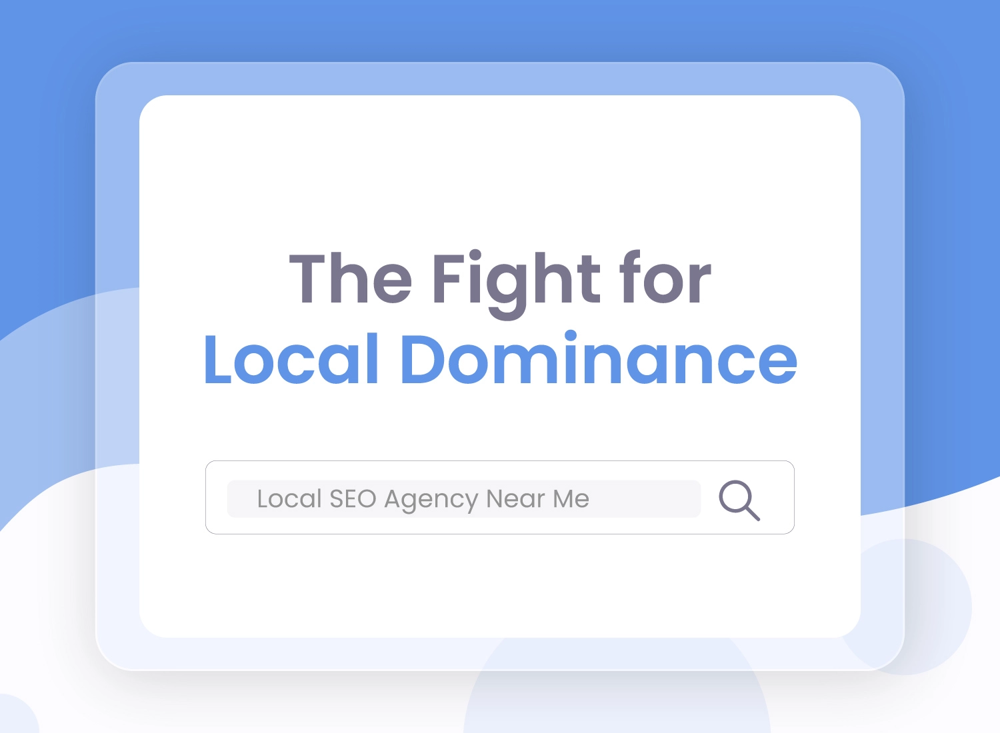

Local visibility audit
Compare the searches that generate impressions with the services you want to sell. Review your Maps visibility across several points in the service area rather than relying on a single ranking check.
Get found by customers who are ready to call
Improve how your business appears in Google Search and Maps with a local SEO plan built around the services you sell and the areas you actually serve.

Compare the searches that generate impressions with the services you want to sell. Review your Maps visibility across several points in the service area rather than relying on a single ranking check.
Build or improve pages where you have genuinely distinct offerings or local information. Include job examples, areas served, practical FAQs, and a clear path to request an estimate.
Resolve indexability, broken links, inconsistent titles, and weak mobile conversion paths. Establish a baseline for qualified calls, forms, and bookings before making changes.
If your site already earns visits but generates few leads, fix the conversion path first. Check whether a customer on mobile can see which neighborhoods you serve, understand the next step, and call or request a quote without searching the footer.
Compare the scope of Grid Rankers’ local SEO services if you need website, listings, and Maps work coordinated. See Google’s local ranking guidance for the platform’s current rules.
Some fixes can go live quickly, but search visibility and qualified lead trends take time to evaluate. Compare consistent periods and consider seasonality before attributing changes to SEO.
No. Google weighs relevance, distance, and prominence. A business can appear in different positions for the same query depending on where the customer searches.
Start with the services you actually deliver in that area, a relevant project or testimonial you have permission to use, and a clear way to book. Avoid cloning the same page for every city.
Tell us what you sell, where you work, and what a qualified lead looks like for your team.